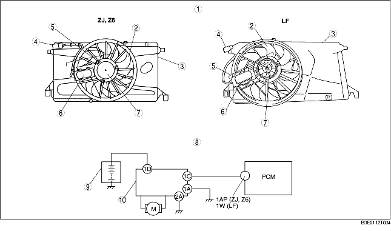

COOLING FAN MOTOR COMPONENT CONSTRUCTION/OPERATION
B3E011215140T01
Construction
• The cooling fan motor component is installed on the back of the cooling fan.
• The cooling fan motor component consists of the fan motor and fan control module.
Operation
• The fan control module drives the fan motor based on the cooling fan control signal sent by the PCM according to the engine coolant temperature, vehicle speed, battery voltage, A/C pressure switch is on or off, and whether the A/C magnetic clutch is on or off.
• The fan control module allows continuously variable control of the fan motor rotation rate reducing fan operation noise and power consumption. If there is a reversed power connection, the fan control module incorporates protection against reversed polarity. The motor reacts to the reversed power connections with unregulated, high-speed rotation in the wrong direction.

.
|
1
|
Cooling fan component external view
|
|
2
|
Cooling fan
|
|
3
|
Radiator cowling
|
|
4
|
Cooling fan motor connector
|
|
5
|
Cooling fan motor component
|
|
6
|
Fan control module
|
|
7
|
Cooling fan motor
|
|
8
|
Cooling fan electrical system wiring diagram
|
|
9
|
Battery
|
|
10
|
Fan control module (Including cooling fan motor)
|
Fail-safe function
1. Over-current fail-safe
-
- If current to the fan motor exceeds the specified value, the fan control module stops the fan motor for a specified period of time.
2. Over heat fail-safe
-
- If the internal area of the fan control module exceeds the specified temperature, the fan control module stops the fan motor for a specified period of time.
3. Input signal open circuit fail-safe
-
- If there is an open circuit in the wiring harness between the PCM and the fan control module, the fan control module stops the fan motor.
4. Reversed polarity fail-safe
-
- If there is a reversed power connection, the fan control module incorporates protection against reversed polarity. The motor reacts to reversed connections with unregulated, high-speed rotation in the opposite direction.